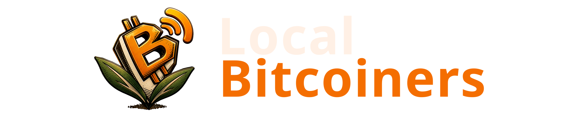

Finding, Building, and Growing Bitcoin Meetup Culture
Couldn't load the latest episode right now. Listen directly on Fountain →
Listen on Fountain, Apple Podcasts, Spotify, or YouTube.
Couldn't load the community right now. Please try again later.
Loading boosts…
Couldn’t load boosts right now. Open the boosts page →